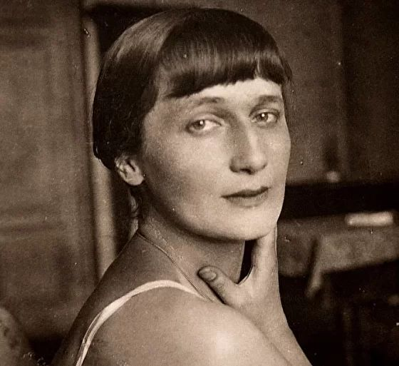

Поэма без героя
«Поэма без героя» произведение Анны Ахматовой, над созданием которой поэтесса трудилась более двадцати лет (1940—1962). Полностью при жизни автора в СССР не была опубликована — распространялась в машинописных копиях. В поэме Ахматова вспоминает давно минувшую эпоху — «серебряный век», время своей молодости и литературного дебюта.
Относительно положения музыки в постмодернистской среде, то независимо от стиля или направления той или иной музыки, это положение характеризуется следующими чертами: если музыка эпохи модерна рассматривалась как способ выражения, то в эпоху постмодерна музыка скорее является зрелищем, продуктом массового потребления и индикатором групповой идентификации, например знаком, помогающим определить свою принадлежность к той или иной субкультуре.
История создания
Со слов Ахматовой, поэма была начата в Фонтанном доме в ночь на 27 декабря 1940 г., когда были написаны два куска первой части («1913») и «Посвящение». Толчком к её созданию стало воспоминание о любовном треугольнике Корнета / Пьеро (Всеволод Князев), Коломбины (Ольга Судейкина) и Арлекина (Михаил Кузмин):
Картина, выхваченная прожектором памяти из мрака прошлого, — это мы с Ольгой после похорон Блока, ищущие на Смоленском кладбище могилу Всеволода (1913). «Это где-то у стены», — сказала Ольга, но найти не могли. Я почему-то запомнила эту минуту навсегда.
Впрочем, первые отрывки, относящиеся к поэме, Ахматова читала ещё осенью, вскоре после того, как Лидия Чуковская принесла ей поэму Кузмина «Форель разбивает лёд», откуда были позаимствованы ассоциативный принцип построения и метрическая схема.
Некоторое время Ахматова предполагала, что это сочинение будет иметь театральную версию («трагический балет»), о чем свидетельствуют ее черновики, по которым литературоведы производят реконструкцию замысла.
В основном поэма была завершена в 1943 г. в Ташкенте, где Ахматова находилась в эвакуации. В дальнейшем Ахматова ещё несколько раз возвращалась к поэме и перерабатывала её вплоть до 1960-х годов. В ходе этих переработок объём поэмы увеличился почти вдвое.
Содержание
В «Поэме без героя» Ахматова описывает давно прошедшую эпоху — предреволюционные годы, время своей молодости и литературного дебюта - соотнося ее с сознанием современного ей читателя. Это описание делается из исторического отдаления, когда уже известны и судьбы большинства тогдашних друзей и знакомых, и метаморфоза России в целом. Это набрасывает на героев поэмы особенный почти мистический флёр: ведь все они — уже тени, как ни трудно пишущей поэму Ахматовой с этим смириться:
Как же это могло случиться,
Что одна я из них жива?
Ахматова первоначально посвятила вторую часть и эпилог поэмы Владимиру Гаршину («Городу и другу»). Однако в 1944 г., сразу после возвращения Ахматовой из эвакуации, последовал разрыв отношений, после которого Ахматова отозвалась о Гаршине как о психически больном человеке.
Поэтика
Поэма написана трёхиктным дольником на основе анапеста — стихотворным размером, занимающим промежуточное положение между классической силлабо-тоникой и более расшатанным акцентным стихом. Этот размер более гибкий и непредсказуемый, чем традиционный анапест, но в то же время сохраняет ореол классичности (поддерживаемый в поэме различными другими уровнями текста: свободным использованием архаизмов и поэтизмов, многочисленными отсылками к Античности — уже в «Первом посвящении» упомянут Антиной, во «Втором посвящении» — Психея и Лета, и т. п.).
Особенно интересна строфика поэмы. В основе строфы лежит схема AAbCCb:
Полно мне леденеть от страха,
Лучше кликну Чакону Баха,
А за ней войдет человек...
Он не станет мне милым мужем,
Но мы с ним такое заслужим,
Что смутится Двадцатый Век.
Однако время от времени Ахматова увеличивает число строк с женской рифмой:
Я не то что боюсь огласки…
Что мне Гамлетовы подвязки,
Что мне вихрь Саломеиной пляски,
Что мне поступь Железной Маски,
Я ещё пожелезней тех...
Это тоже делает стих поэмы непредсказуемым, а определённые места в тексте — особо выделенными. В некоторых работах такое построение получило название «ахматовская строфа».
Публикация
Поэма появилась в самиздате в 1962—1965 годах
«Списки „Поэмы без героя“, перепечатанные ценителями поэзии Ахматовой, быстро разлетелись по стране (Варлам Шаламов вспоминает, что он познакомился с ней еще в годы войны, когда отбывал срок в колымских лагерях). Тогда же, в 1944-45 гг., фрагменты „Поэмы без героя“ появились в печати (журн. „Ленинград“, 1944, № 10/11 — отрывок из „Эпилога“; „Ленинградский альманах“, 1945 — фрагменты из первой части). Однако события 1946 — идеологическая казнь Ахматовой, после знаменитого доклада Жданова о журналах „Звезда“ и „Ленинград“, а также некоторые обстоятельства личной жизни поэтессы — повлекли за собой переработку и расширение замысла поэмы».
Ахматова называла датой окончания поэмы 1962 год, когда она отдала полный ее текст в редактировавшийся Твардовским «Новый мир» — однако напечатать произведение тогда не удалось. Большие фрагменты печатались во всех авторских сборниках поэтессы, начиная с 1958 года.
Впервые ее полный текст был напечатан в нью-йоркском альманахе «Воздушные пути» (вып.2, 1961) Архивная копия от 3 апреля 2016 на Wayback Machine. Наконец, в СССР поэма появилась целиком в книге «Избранное» (М., 1974) и в составленном Жирмунским сборнике Ахматовой «Стихотворения и поэмы» (Ленинград, 1976). «Однако по-прежнему не могли пройти цензуру несколько „пропущенных строф“ из „Решки“ и „Эпилога“:
„Ты спроси моих современниц,
каторжанок, стопятниц, пленниц,
и тебе порасскажем мы,
как в беспамятном жили страхе,
как растили детей для плахи,
для застенка и для тюрьмы…“;
„А за проволокой колючей,
в самом сердце тайги дремучей,
я не знаю, который год
ставший горстью лагерной пыли,
ставший сказкой из страшной были
мой двойник на допрос идет…“
Эти строки „Поэмы без героя“ до 1987 г. распространялись в СССР в Самиздате, любители поэзии вклеивали напечатанные на машинке вставки в книги Ахматовой».